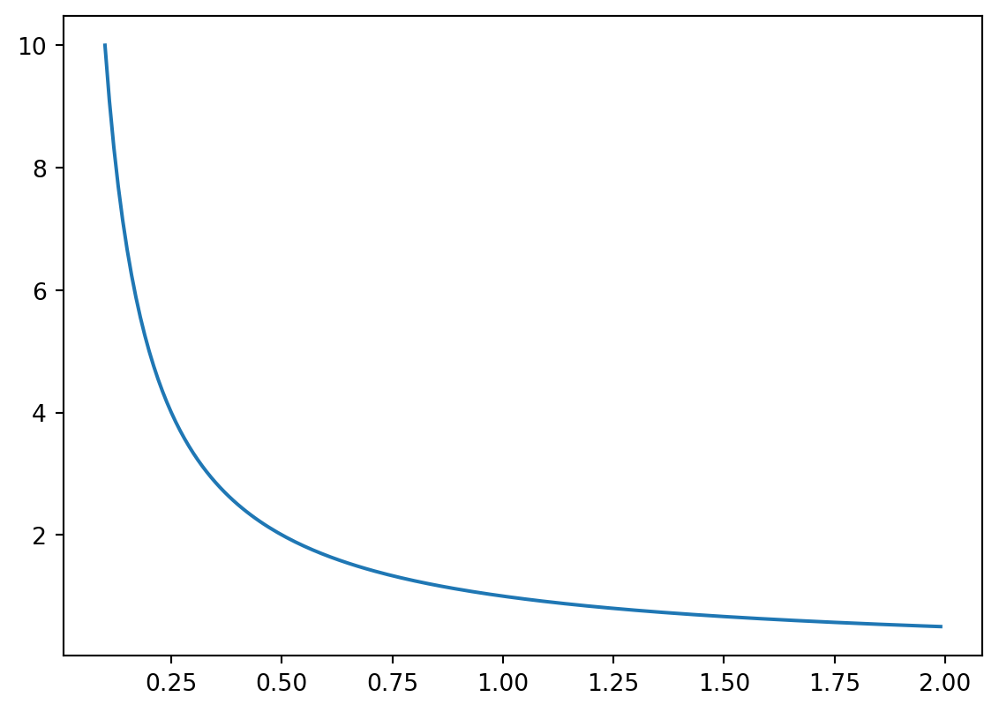

Code
import numpy as np
import matplotlib.pyplot as plt
x = np.arange(0.1, 2, 0.01)
y = 1/x
fig, ax = plt.subplots()
ax.plot(x,y)
plt.show()

Today I visited Glimm and Jaffe (1987). It is a technical work. It explains the program of constructive quantum field theory. One idea was the following: partial differential equations generalize ordinary differential equations and quantum field theories generalize partial differential equations. ODEs have one degree of freedom, usually time \(t\). PDEs usually have 3 or 4 degrees of freedom, say, \(t, x, y,\) and \(z\). But quantum fields have infinitely many degrees of freedom.
ODE -> PDE -> Quantum FieldsRecall briefly that in a classical field, say, a vector field, one attaches a vector to each point in space. The prototypical example of a classical field is an electromagnetic field. In classical mechanics, one observes the trajectory of a particle, and its state is described by 6 degrees of freedom: 3 coordinates of position and 3 coordinates of momentum.
So, what are the degrees of freedom for a classical field? Note that each point in space should have a vector attached to it, say, a 3-vector. Wait, what is meant by degree of freedom for the case of a PDE depending on \(x_1, x_2, x_3, p_1, p_2, p_3\)? It should mean that, when values for these degrees of freedom are chosen, then all other observables are determined, so there is no more freedom left. In a classical field, then, we expect that the phase space again has something like 6 degrees of freedom. Once position and momentum are fixed, then all the vectors attached to any point in the phase space are determined.
So how could it be that a quantum field has infinitely many degrees of freedom? A quantum field is morally an operator attached to each point in space. I feel like there are still only finitely many degrees of freedom. Shouldn’t the operators be determined by whichever point in 4-space you are in?
Today I spent some time reading Chatterjee (2016). I feel like I have learned a little after spending time on other literature in the Communications of Mathematical Physics and Glimm and Jaffe (1987), but it felt very weak while reading Chatterjee (2016) again.
I would like to understand the meaning of Chatterjee (2016)’s Theorem 2.1 statement and how it implies the results for the leading term of the free energy for \(d = 3\) and \(d = 4\), and also why one cannot conclude as much in the \(d=4\) case.
I do see, vaguely, how Theorem 2.1 involves a renormalization (subtracting off \(d\) and \(1/n\) and so forth). I could see as well the results from section 8 and 9 on the a priori bounds, but they seemed not that impressive because the upper bound was quite huge.
Today I spent time reading Brennecke (2024) and Brennecke (2025). I’m not sure whether it is appropriate to cite lecture notes, but I mainly wanted to point out that I read Brennecke’s notes today.
I’ve been mulling over representations. Let \(G\) be a group and let \(V\) be a vector space. A representation of \(G\) is a map \(\rho: G \to GL(V)\), where \(GL(V)\) is the set of invertible linear maps from the vector space \(V\) to itself. A finite dimensional representation is a representation where \(V\) is finite-dimensional.
I’m confused about whether finite-dimensional representations arise in the context of the state transformation law for quantum fields. The state transformation law for a quantum field is a representation of the Poincaré group on the state space of the quantum system. In symbols: \[\begin{equation} (a,L) \ni \mathcal{P} \to U(a,L) \in \mathcal{U}(\mathcal{H}). \end{equation}\] Thus, \(U(a,L)\) is a mapping from the infinite dimensional space \(\mathcal{H}\) to itself. So I don’t see how a finite dimensional representation could arise from the state transformation law.
My next guess as for where finite dimensional representations would arise in a quantum field theory is in the field transformation law. That is because one considers \(n\) by \(n\) matrices to describe the field transformation law. I need to recall field transformations in classical fields. Recall the notion of a vector field. And recall the transformation rules for derivations. I think the point is to describe the fields in different coordinate systems.
Post Script: as a response to my December 11th note, I believe the infinite degrees of freedom arises from the partial derivative: \[\begin{equation} \partial_\psi f(\pi) = \frac{d}{dt} f(\pi + t \psi) \end{equation}\] or something of that sort, where one has the infinite dimensional space of \(\psi\)’s to choose from.
In this note I want to summarize what Prof. Brennecke told me today in my thesis meeting.
What Brennecke told me was quite enlightening. In short, he pointed to each term in the Chatterjee formula and said what it meant in terms of the rest of the paper. I wish I had thought of doing that earlier.
Recall that \(o(n^d)\) as \(n \to \infty\) is a term \(g(n)\) that satisfies \(g(n) / n^d \to 0\) as \(n \to \infty\). For instance, it could be \(g(n) = n^{d-1}\) because then there is still an \(n\) left in the denominator. Basically any function of \(n\) that grows an order more slowly than \(n^d\) in the large \(n\) limit. For intuition related to the lattice model, recall that there are \(n^d\) vertices, so something that is \(n^{d-1}\) could be, for instance, the boundary vertices. Maybe as a future exercise, I can create a table with stuff having the various orders in the lattice model.
Recall also that \(O(1/n)\) as \(n \to \infty\) referes to functions \(g(n)\) that are eventually of the same order as \(1/n\) when \(n\) is large.
So Chatterjee, in Chatterjee (2016), basically proves the formula: \[\begin{equation} \frac{\log Z}{n^d} = O(1)N^2\log(g_0^2) + (d-1)\log \frac{\prod_{i=1}^{N-1}j!}{(2\pi)^{N/2}} + N^2 K_d, \end{equation}\] as \(n \to \infty\) and \(g_0 \to 0\).
There are three terms on the right hand side. Brennecke says that the second term comes from a Radon Nikodym derivative. Let me think about that. The only sensible place a Radon Nikodym derivative could show up is when comparing the Haar measure on \(U(N)\) with the Lebesgue measure on \(H(N)\). Wait, no. Perhaps it is when comparing the Lebesgue measure on \(H(N)\) with the usual Lebsgue measure on \(\mathbb R^{2n}\). Ok, I looked in Chatterjee (2016) section 11 and let me summarize:
Recall that the exponential map maps Lie algebra to Lie group. In our context, the Lie algebra is the Hermitian matrices \(H(N)\) and the Lie group is the unitary matrices \(U(N)\). We already have Haar measure on \(U(N)\). Now, what is the only way to use the exponential map to push the Haar measure or pull the Haar measure onto the Hermitian matrices? Well, given a subset \(A \subset H(N)\), we have to send that subset \(A\) over to the Lie group via \(\psi(\cdot) = e^{i(\cdot)}\), the exponential map (with an i-factor), and measure it according to Haar measure: \[\begin{equation} \nu(A) = \sigma (\psi(A)), \end{equation}\] which is the formula on page 26 of Chatterjee (2016).
Okay, I’m a bit stuck on how the second term comes from the Radon Nikodym derivative. I’ll continue that discussion later.
There is also the \(N^2K_d\) term which comes from lattice Maxwell theory, which is a Gaussian theory where you can explicitly compute things (or so I’m told). Finally, I’m not immediately sure where the \(\log(g_0^2)\) term comes from. Brennecke mentioned the discrete Poincaré inequality, so it could come from there. Let me check. I don’t think that relates, rather I think the discrete Poincaré inequality allows one to say something is positive definite, which enables the Gaussian stuff to begin.
Ah wait, there are actually two Poincaré inequalities in Chatterjee (2016). The one I mentioned in the previous paragraph is Lemma 13.1. The other one that I missed is Lemma 10.2. Actually, now I understand another one of Brennecke’s comments, namely that axial guage fixing is required in order to make a smallness of the Wilson action argument, and that without it, there is no path to success. I think I would need to investigate the proof of Lemma 17.2 to be able to see how the first term arises in relation to axial guage fixing and so forth.
I want to record some observations about the Wilson action and some estimates. Consider \[\begin{equation} S_{B_n}(U) \le C n^d \frac{\log \beta }{\beta}. \end{equation}\] Let me explain the various terms involved here. \(Cn^d\) arises as an estimate on the number of elements in the set \(|B_n'|\), which is the set of plaquettes for the box \(B_n\). The reciprocal of \(\beta\) term should be moved to the left hand side and related to the usual integrand \(\exp(\beta S_{B_n}(U))\), which is one factor in the Radon Nikodym derivative \(\frac{d\mu_{YM}}{d\sigma_n}\).
The \(\log \beta\) term is a bit harder. From the proof of Theorem 7.1 Chatterjee (2016), we have \[\begin{equation} \sigma_{B_n} \{ U: S_{B_n}(U) \le |B_n'|/\beta \} \ge (C_1 \frac{1}{\sqrt{8 \beta}})^{C_3 n^d} \end{equation}\] where \(C_1\) is from Corollary 6.3, which gives an estimate on a small ball probability for unitary group, and \(C_3n^d\) arises as a term to help approximate the number of edges in the box \(B_n\) and to compensate for the term \(N^2\) in Corollary 6.3. Multiplying both sides by \(e^{-|B_n'|}\), we get \[\begin{equation} e^{-|B_n'|} \sigma_{B_n} \{ U: S_{B_n}(U) \le |B_n'|/\beta \} \ge e^{-|B_n'|} (C_1 \frac{1}{\sqrt{8 \beta}})^{C_3 n^d}. \end{equation}\] Can the right hand side be written as \(\exp(-Cn^d \log \beta)\) for some positive constant \(C\) (as in the statement of Theorem 7.1)? Working backwards, yes. The \(C\) term is malleable, so write \(\exp(-2Cn^d \log \beta) = \exp(-Cn^d \log \beta - Cn^d \log \beta) = \exp(-Cn^d \log \beta) \exp( - Cn^d \log \beta)\). One of the terms on the far right hand side can account for \(e^{-|B_n'|}\). That is, \[\begin{equation} e^{-|B_n'|} \approx \exp(-Cn^d \log \beta) \end{equation}\] Also, by the \(x^{mn} = (x^m)^n\) rule for exponents, we have \(\exp( - Cn^d \log \beta) = (\exp( \log \frac{1}{\beta}) )^{Cn^d} = (\frac{1}{\beta})^{Cn^d}.\) Then \[\begin{equation} (\frac{1}{\beta})^{Cn^d} \approx (C_1 \frac{1}{\sqrt{8 \beta}})^{C_3 n^d} \end{equation}\] I’m tired, so I won’t finish except to write that the product Haar measure (\(\sigma_{B_n}\)) of configurations where the contribution of each plaquette to the Wilson action is on average less than \(\beta\), is lower bounded as \[\begin{equation} \sigma_{B_n} \{ U: S_{B_n}(U) \le |B_n'|/\beta \} \ge \exp(-Cn^d \log \beta). \end{equation}\] I still need to figure out how to explain the term \(\log \beta\) in the first equation in today’s entry.